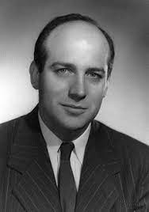
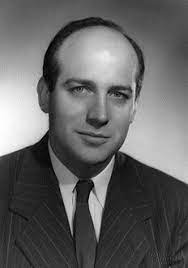

TOPIC: Computer Architecture
Technology
- The technology is moving very quickly
- 19th century: attempts to build mechanical computers
- Early 20 th century: mechanical computers
- Mid 20 th century: vacuum tubes as switches
- Since: transistors, integrated circuits
CHARLES BABBAGE
- In the early 1800’s Charles Babbage designed two machines: first the Difference Engine and then the Analytical Engine that were mechanical machines capable of performing calculations.
- The Difference Engine, most (but not all) of which was built in Babbage’s time, was a special purpose machine (i.e. it could only do particular calculations).
- The Analytical Engine, which was designed but not built in Babbage’s time, was more ambitious in that it was programmable.

In the 1940’s the Electronic Numerical Integrator And Computer (ENIAC) was built at the Moore School of the University of Pennsylvania. It was completed in 1946 at the Moore School of the University of Pennsylvania.
 

The two driving forces behind it were John W. Mauchly and J. Presper Eckert. There were other computers built during WWII notably the one developed at Bletchley Park, UK to aid in their code breaking mission.
The ENIAC consisted of 17,480 vacuum tubes operating at 100,000 pulses per second. Vacuum tubes play the same role that transistors do in modern computers (one can use them to “realize” logic gates (вентили)) The switch from vacuum tubes to transistors marked a dramatic shift in computer size and speed. The Pentium 4 processor introduced in 2000 had 42,000,000 transistors. The Itanium 2 in 2004 had 592,000,000 transistors. The more recent Core i7 processor has a transistor count is 731 Million.
- Computers connected in a network environment.
- Manage network resources
- Holds and delivers an organization’s web pages
- Stores and retrieves tasks for all of an organization’s files
- A printer server handles all print requests.
- First computers, introduced in 1950s
- Used primarily by large organizations for critical applications, bulk data processing
- Used by large businesses
- Typically supported hundreds or thousands of users
- Very expensive
- Used for very large processing tasks
- Typically supported hundreds of users
- No longer a product line
- Smaller and less expensive than mainframes
- The real difference is relative in terms of price, power, marketing.
- Processor (CPU) Runs program instructions
- Main Memory Storage for running programs and current data
- Secondary Storage Long-term program & data storage (hard disk, CD, etc)
- Input Devices Communication from the user to the computer(e.g. keyboard, mouse)
- Output Devices Communication from the computer to the user (e.g. , printer, speakers)
A motherboard is the central printed circuit board (PCB) in many modern computers and holds many of the crucial components of the system, while providing connectors for other peripherals. The motherboard can be easily compared to the human body’s nervous system. The wires (nerves) on it transfer data between all of the other components.
The processor is the "brain" of the computer system. Main processor is called the Central Processing Unit (CPU). A particular computer will have a particular type of processor, such as a Pentium or a SPARC chip. Co-processors assist the CPU with some of the processing functions.
Examples: Math co-processors handle heavy duty math processing Graphics coprocessors speed up the display of graphics onto the monitor
Computer Memory - millions/billions of on/off charges Divided into:
- Bits 0 or 1
- Bytes Groups of 8 bits A byte is the smallest unit of storage. (Can hold one text character)
- Words Groups of bits/bytes (8, 16, 32, 64-bits)
Thanks for your attention